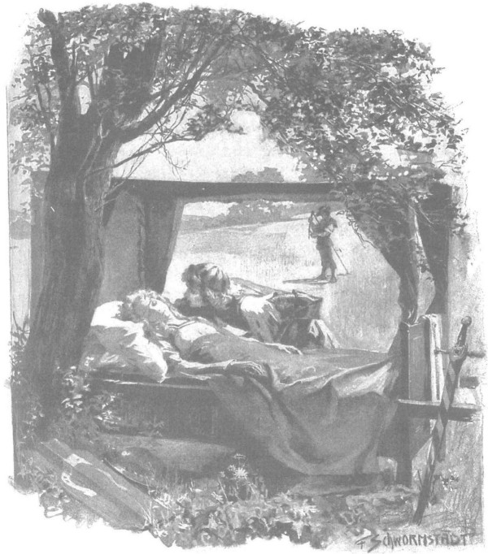

Mãi chín ngày sau khi Jagienka ra đi, Zbyszko mới về đến địa giới trang Spychow, nhưng Danusia đã rất gần với cái chết, chàng hoàn toàn mất hết hy vọng rằng nàng sẽ còn sống để gặp lại cha. Ngay ngày hôm sau, khi nàng bắt đầu nói những lời không tỉnh táo, chàng đã nhận ra rằng không chỉ là đầu óc nàng bị bấn loạn, mà nàng đã nhiễm một căn bệnh gì đó cái cơ thể trẻ thơ của nàng héo mòn vì tù đầy, bị giày vò hành hạ quá lâu và nỗi sợ hãi triền miên, đã không còn có chút sức nào để chống đỡ. Có thể dư âm từ trận chiến khốc liệt của ông Maćko và Zbyszko với bọn Đức đã làm tràn chiếc li của nỗi hãi hùng, và chính lúc ấy căn bệnh đã tấn công nàng, cơn sốt không buông tha nàng suốt từ đó đến cuối cuộc hành trình. Tình huống này cũng có chút may mắn, vì Zbyszko đã mang nàng đi gần như đưa một người chết, vô thức và không biết chuyện gì chung quanh, để vượt qua những khu rừng khủng khiếp, băng qua muôn vàn khó khăn to lớn. Sau khi đã vượt qua rừng thẳm, họ đặt chân vào vùng đất phì nhiêu, giữa các trang trại của điền chủ và giới quý tộc, những nguy hiểm và gian khó đã kết thúc. Khi được biết rằng họ đang mang theo một cô gái trẻ đồng hương, được cướp lại từ tay bọn hiệp sĩ Thánh chiến, lại là con gái của hiệp sĩ Jurand lừng danh mà những người hát rong thường hát những bài hát ngợi ca qua bao thành quách, cung đình và làng mạc, thì mọi người đua nhau giúp đỡ và hỗ trợ. Họ cung cấp lương ăn và ngựa cưỡi. Mọi cánh cửa đều rộng mở. Zbyszko không còn phải chở Danusia trong cái nôi buộc giữa hai con ngựa, mà những trai tráng lực lưỡng thay nhau cáng nàng đi từ làng này qua làng khác một cách thật cẩn trọng và nâng niu, như mang một thánh nữ. Phụ nữ vây bọc nàng bằng sự chăm sóc ân cần nhất. Khi nghe kể về những tai ương mà nàng đã phải gánh chịu, những người đàn ông nghiến chặt răng, không chỉ một người muốn khoác ngay giáp sắt, nắm chặt thanh kiếm, lưỡi rìu hoặc ngọn giáo và đi theo Zbyszko để trả thù, bởi dường như đối với thế hệ căm hờn sục sôi này, lấy máu trả máu vẫn còn chưa đủ. Nhưng lúc này Zbyszko hoàn toàn không nghĩ đến việc báo thù, mà chỉ lo cho Danusia.
Chàng sống giữa những tia hy vọng mỗi khi người bệnh đỡ hơn và nỗi tuyệt vọng câm lặng khi tình trạng của nàng xấu đi trông thấy. Nhưng chàng không thể tự đánh lừa mình được nữa. Ngay từ đầu cuộc hành trình, nhiều lúc thoáng qua đầu óc chàng ý nghĩ đầy mê tín rằng có thể đâu đó trong vùng hoang vu không có đường mà họ băng qua, thần chết rình rập từng bước sau lưng, chỉ chờ thời điểm thích hợp sẽ lao vào Danusia để hút cạn phần sinh khí ít ỏi còn lại của nàng. Viễn cảnh ấy, mà đúng hơn là linh cảm ấy, vào những đêm tối đen trở nên đặc biệt rõ ràng, đến nỗi nhiều khi chàng tuyệt vọng chỉ muốn quay trở lại, để thách thức quỷ vương - tên mà giới hiệp sĩ vẫn hay gọi thần chết - quyết đấu một trận sống mái đến hơi thở cuối cùng. Đoạn cuối của cuộc hành trình còn tệ hơn, bởi chàng cảm thấy thần chết không còn ở đằng sau mà ngay trong đoàn người, dù không nhìn thấy, nhưng rất gần, hơi thở băng giá của cái chết vương vít quanh họ. Và chàng hiểu ra rằng để chống kẻ thù ấy, lòng can đảm chẳng có nghĩa gì, đôi tay rắn chắc và khí giới chẳng có nghĩa gì, chàng đành bất lực giao lại mái đầu thân yêu nhất như một miếng mồi cho y mà không thể giao chiến.
Và đó là cảm giác khủng khiếp nhất, bởi vì nó gắn liền với nỗi đau như gió lốc không thể kìm hãm, nỗi đau thẳm sâu như biển khơi không đáy. Linh hồn Zbyszko sao có thể không rên rỉ, sao có thể không giằng xé vì đớn đau, khi nhìn người con gái yêu dấu của mình, chàng bất giác nói với nàng như thể buột miệng:
- Ta yêu quý em làm gì, ta tìm kiếm và chiến đấu cứu em làm gì, nếu mai này ta phải chôn em xuống đất, sẽ không được thấy em nữa?
Nói thế, chàng lại nhìn đôi má đỏ hồng vì sốt, đôi mắt thất thần mơ hồ của nàng mà hỏi một lần nữa:
- Em bỏ ta? Em không thấy tiếc ư? Em muốn rời ta hơn ở lại với ta sao?
Để rồi sau đó chàng lại nghĩ rằng có lẽ chính đầu óc chàng cũng bị bấn loạn, ngực chàng đau tức như bị một cơn thổn thức khổng lồ đè nén, nhưng cứ thiêu đốt mà không thể bùng ra, vì bị chặn ngang bởi một nỗi căm hận, một cơn cuồng nộ đối với cái thế lực tàn nhẫn, mù quáng và lạnh lùng đã gây đau khổ cho đứa trẻ vô tội kia. Nếu một gã Thánh chiến độc ác nào có mặt trong đoàn này, chàng sẽ xé xác y như một con thú hoang dã.
Khi tới được lâm cung chàng muốn dừng lại, nhưng vào tiết xuân nó rất vắng vẻ. Những người canh giữ cho chàng biết rằng cả quận công và quận chúa đã đến Plock thăm em trai là quận công Ziemowit, chàng liền từ bỏ ý định đi đến Warszawa, nơi mà các lương y của hoàng cung có thể chữa bệnh cho cô gái. Chàng buộc phải trở về Spychow, đó lại là điều kinh khủng, bởi chàng nghĩ rằng mọi thứ đã chấm dứt và chàng chỉ đưa về cho ông Jurand một cái xác mà thôi.
Nhưng chỉ vài giờ trước khi đến Spychow thì một tia hy vọng lại rọi sáng trái tim chàng. Má Danusia dần bớt đỏ, đôi mắt trở nên ít mờ mịt hơn, hơi thở bớt khó nhọc và chậm dần lại. Zbyszko nhận thấy ngay và sau một lát, chàng ra lệnh dừng nghỉ lần cuối cùng, để nàng có thể hít thở nhẹ nhàng. Họ còn cách Spychow chừng một dặm, cách xa vùng có dân cư, trên một con đường hẹp chạy giữa cánh đồng và nội cỏ. Gần đấy có cây lê dại tỏa bóng che ánh mặt trời, nên họ dừng lại dưới tán của nó. Đám gia nhân chăm sóc đàn ngựa, tháo đây cương để chúng gặm cỏ thoải mái. Mệt mỏi vì chặng đường dài và hơi nóng mặt trời, hai cô gái chuyên chăm sóc Danusia và những người trai trẻ khiêng cáng cho nàng đã ngả người trong bóng râm ngủ thiếp đi; chỉ còn mỗi mình Zbyszko canh cáng, chàng ngồi xuống một chiếc rễ cây lê, không rời mắt khỏi người ốm.
Còn nàng nằm giữa lặng yên ban chiều, bình thản, với đôi mắt khép lại. Nhưng Zbyszko có cảm giác là nàng không hề ngủ. Quả thực, khi ở phía đầu bên kia cánh đồng cỏ rộng lớn, một nông dân cắt cỏ khô đứng lên và bắt đầu lùa lưỡi hái vào làn cỏ, nàng hơi rùng mình và hé mở làn mi một thoáng, rồi khép lại; ngực nàng nhô cao như cố hít một hơi thật sâu, và tiếng thì thầm khẽ thốt ra từ đôi môi nàng:
- Thơm quá…
Đó là những lời đầu tiên không vì cơn sốt và không vô nghĩa mà nàng thốt ra từ đầu cuộc hành trình, vì quả thực làn gió nhẹ từ đồng cỏ được ánh mặt trời sưởi ấm đưa về đây một hương thơm nồng nàn, trong đó có thể cảm nhận hương cỏ khô, mùi mật ong và các loại thảo mộc tỏa mùi thơm khác nhau. Ngỡ ý thức của người ốm đã trở lại, trái tim Zbyszko run rẩy niềm vui. Hoan hỉ quá, thoạt tiên chàng muốn ôm hôn chân nàng, nhưng sợ làm nàng sợ hãi, nên chàng tự kiềm chế, chỉ quỳ bên cạnh cáng và cúi xuống gọi tên nàng khe khẽ:
- Danusia! Danusia!
Nàng lại mở mắt, nhìn chàng hồi lâu, rồi một nụ cười bừng sáng khuôn mặt nàng, hệt như trước đây trong căn lều của những người thợ sơn tràng, nhưng còn tỉnh táo hơn, nàng gọi tên chàng:
- Zbyszko!…
Và nàng cố chìa tay cho chàng, nhưng không thể vì quá yếu; vòng tay chàng ôm nhẹ lấy nàng, với trái tim căng tràn như thể muốn cảm ơn nàng vì một ân sủng vô biên.
- Em tỉnh rồi! - Chàng thốt lên. - Ôi, ngợi ca Đức Chúa… Đức Chúa…
Rồi chàng nghẹn lời, và suốt hồi lâu họ im lặng nhìn nhau. Sự im lặng của đồng quê chỉ bị xáo trộn bởi làn gió thơm hương từ phía bên kia đồng cỏ đưa về, tiếng xạc xào trong tán lá cây lê, tiếng lũ ngựa đang ăn trên đồng cỏ và tiếng hát xa xăm không rõ lời của người cắt cỏ khô.
Danusia có vẻ mỗi lúc một tỉnh táo hơn và không thôi mỉm cười, hệt như một đứa trẻ gặp được thiên thần trong giấc mơ.
Tuy chậm rãi, nhưng trong ánh mắt nàng hiện dần một nỗi ngạc nhiên:
- Em đang ở đâu đây? - Nàng cất tiếng.
Miệng chàng trai ào ra một loạt câu trả lời ngắn, đứt đoạn vì quá vui mừng:
- Em đang ở bên anh! Gần Spychow! Ta đang về với cha. Nỗi bất hạnh của em chấm dứt rồi! Ôi! Danusia của anh! Ôi, Danusia! Anh đã tìm được em, anh đã cứu em. Em không còn nằm trong tay bọn Đức nữa rồi. Đừng sợ! Em sẽ sớm về đến Spychow ngay bây giờ. Em ốm, nhưng Chúa Giêsu đã thương xót! Bao đau đớn, bao than khóc! Danusia!… Giờ tốt rồi… Không có gì khác, chỉ toàn hạnh phúc đang đón chờ em. Hey anh đã tìm em… anh đã lang thang biết bao chặng đường… Hey Đức Chúa hùng mạnh… Hey!
Và chàng thở một hơi thật dài, như trút hết gánh nặng buồn đau khỏi lồng ngực.
Danusia năm lặng lẽ, dường như đang nhớ lại điều gì đó, đang cân nhắc điều gì đó, và sau cùng nàng hỏi:
- Thế anh không quên em sao?
Và hai giọt lẹ dâng tràn trong mắt nàng, chầm chậm lăn tròn trên mặt, rơi xuống chiếc gối đầu.
- Sao anh quên em được chứ! - Zbyszko kêu lên.
Có biết bao sức mạnh trong tiếng kêu bị dồn nén ấy, mạnh hơn cả những lời thề nguyền mạnh nhất, bởi chàng luôn yêu quý nàng với tất cả linh hồn, và kể từ khi giành lại được nàng, nàng còn trở nên quý hơn cả thế giới.
Yên lặng lại bao trùm, phía xa xa, người nông phu đã ngừng hát và đưa lưỡi hái vào đám cỏ khô lạt sạt.
Môi Danusia lại bắt đầu mấp máy, nàng thì thầm khẽ đến mức Zbyszko không thể nghe rõ, chàng bèn cúi xuống phía nàng và hỏi:
- Em nói gì, em yêu của anh?
Và nàng lặp lại:
- Thơm quá…
- Chúng mình đang ở bên đồng cỏ, - chàng nói, - nhưng ta sẽ lại lên đường ngay đây em yêu. Về với cha, người cũng đã thoát khỏi giam cầm. Và em sẽ là của anh cho đến chết. Em có nghe anh nói rõ không? Em có hiểu không?
Đột nhiên, chàng cảm nhận một nỗi lo sợ bất ngờ, vì khuôn mặt nàng bỗng trở nên nhợt nhạt và mỗi lúc một tái đi, với những giọt mồ hôi lấm tấm rơi.
- Em sao thế? - Chàng hỏi với một nỗi sợ hãi khủng khiếp. Chàng cảm thấy tóc dựng ngược trên đầu và lạnh toát đến tận xương.
- Sao thế em yêu? Nói đi em! - Chàng lại hỏi.
- Tối! - Nàng thì thầm.
- Tối? Mặt trời đang chiếu sáng, mà sao em thấy tối? - Chàng hổn hển hỏi. - Em vừa nói tỉnh táo lắm mà! Lạy Đức Chúa lòng lành, hãy nói một lời đi em!
Nàng mấp máy môi, nhưng thậm chí không còn có thể thầm thì được nữa. Zbyszko chỉ đoán rằng nàng đang kêu tên chàng và muốn gọi chàng. Rồi đôi tay gầy guộc của nàng bắt đầu co giật và run lên trong tấm khăn đắp. Chỉ kéo dài một lúc. Không còn gì để ảo tưởng nữa - nàng đã qua đời.
Còn chàng, với nỗi kinh hoàng và thất vọng trào dâng, ra sức cầu van nàng, như thể xin nàng làm điều gì đó:
- Danusia! Lạy Chúa Giêsu nhân từ!… Xin chờ cho đến Spychow! Chờ đã! Chờ đã! Ôi Chúa ơi! Chúa ơi! Chúa ơi!
Nghe lời cầu xin của chàng, mấy người phụ nữ vùng cả dậy, những người gia nhân đang trông ngựa trên đồng cỏ phía xa cũng chạy lại. Nhưng chỉ nhìn thoáng qua họ đều biết chuyện gì đã xảy ra, họ liền quỳ gối và bắt đầu đọc kinh cầu nguyện.

Rồi nàng chìm sâu vào giấc ngủ vĩnh hằng
Gió ngừng thổi, tán lá cây lê ngừng xao xác, chỉ những lời cầu nguyện vang ngân trong cái im lặng tuyệt đối của đồng quê.
Trước khi kết thúc lời kinh cầu, mắt Danusia còn mở ra lần nữa, như thể nàng muốn được nhìn Zbyszko và thế giới tràn ngập ánh mặt trời lần cuối cùng, và rồi nàng chìm sâu vào giấc ngủ vĩnh hằng.
Những người phụ nữ vuốt mắt cho nàng, rồi sau đó đi ra đồng tìm hái hoa. Các gia nhân cũng theo họ, bước đi trong ánh nắng mặt trời giữa những đám cỏ tươi tốt, trông giống như những vị thần đồng nội, chốc chốc lại dừng bước và cất tiếng khóc, bởi vì trái tim họ ngập tràn lòng thương cảm và tiếc nuối. Zbyszko quỳ trong bóng râm, bên chiếc cáng, đầu tì vào đầu gối Danusia, bất động và câm lặng, giống như đã chết, còn họ đi quanh đấy lúc gần lúc xa, hái những bông vạn thọ vùng đầm lầy, hoa chuông vàng, những đóa hồng dại mọc um tùm gần đấy và những bông đồng tiền màu trắng tỏa ngát mùi mật. Họ cũng tìm thấy hoa huệ hoang mọc trong những chỗ hõm ẩm ướt, hoa bướm vàng mọc ở chân gò kế bên. Khi hoa đã nặng tay, họ buồn rầu vây quanh chiếc cáng và bắt đầu kết hoa cho nó. Thi thể nàng được phủ gần kín dưới những bông hoa và lá, chỉ trừ khuôn mặt nàng, trắng toát giữa những đóa hoa chuông và huệ tây, lặng lẽ, yên bình, như đang chìm trong giấc mộng phiêu linh, thanh thản hệt như thiên thần.
Đến Spychow chỉ còn không đầy một dặm, nên sau khi nỗi buồn đau đã vơi bớt theo dòng nước mắt, họ lại nhấc cáng và đi tới khu rừng, từ sau rừng đã bắt đầu là đất của ông Jurand.
Các gia nhân dẫn đàn ngựa đi sau đoàn người. Zbyszko tự mình khiêng một đầu cáng, phía trước là đám phụ nữ mang những vòng thảo mộc và hoa lá sum sê, hát những khúc ca cầu nguyện - và cứ vậy, họ bước đi chầm chậm như một đám rước tang lễ giữa một bên là đồng cỏ xanh và một bên là dãy gò đồi phẳng phiu màu xám.
Trên bầu trời xanh ngắt không một gợn mây, cả nhân thế nóng lên dưới ánh mặt trời vàng rực.